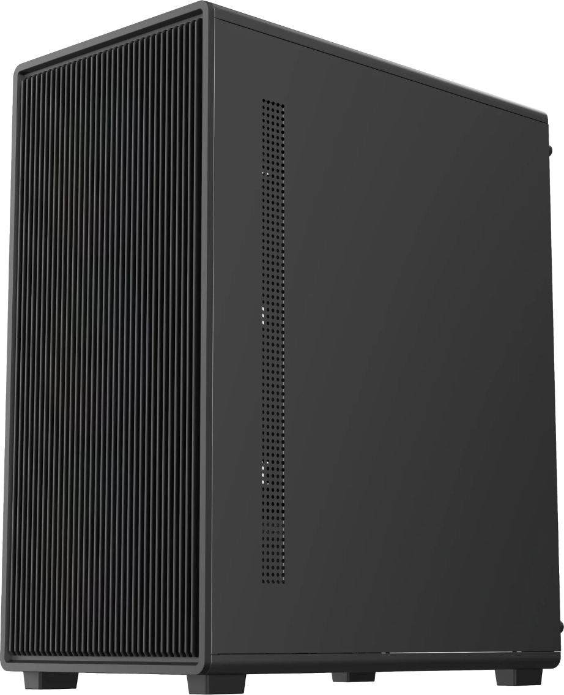

Compute built
for the work.
One registered server family. Ten application-oriented configurations. Specified for infrastructure, video, network security and demanding on-premise workloads.

Tower chassis / indicative product imageOne family.
Built around each workload.
Compare reference hardware profiles for the ten models listed in the Neurulus BIS licence. Select a model to review its compute, memory, storage, networking and power configuration.
Reference configurations *
*Configuration status. The BIS letter confirms the ten model identifiers, not the component-level specifications for every variant. Except for the published ICCCVMS datasheet, profiles shown here are proposed reference configurations for commercial discussion—not verified factory build sheets or BIS-approved hardware combinations. Final CPU/board compatibility, RAM limits, drive bays, I/O, network adapters and PSU are subject to engineering confirmation.
VIDEO MANAGEMENT / COMMAND CENTRE
D3HW-5212H5
ICCCVMS
A defined Neurulus tower configuration for video management, monitoring and integrated command-centre deployments.
- Processor architecture
- Intel Core i7, 4 cores / 8 threads, 8 MB cache
- Clock frequency
- 3.4 GHz base / up to 4.0 GHz turbo
- System memory
- 32 GB DDR4
- Primary storage
- 10 TB SATA HDD
- Network connectivity
- Dual Gigabit RJ45, onboard + add-in adapter
- Typical I/O
- HDMI, VGA, USB 3.0 / 2.0, audio, PS/2
- Power supply
- 450 W ATX SMPS
- Indicative dimensions
- 420 × 190 × 400 mm (H × W × D)
Chassis measurements are illustrative; confirm as-built dimensions and I/O before purchase. Hardware performance and supported camera counts depend on software, codec and bitrate.
Proof is part
of the product.
Use the original registration letter and official BIS database to independently verify the Neurulus brand, licensed server models and registration scope.
IEC 60950-1: 2005
Registration applies to the specified brand, licensed manufacturing facility and listed models. Continued validity remains subject to BIS requirements, including annual compliance and fees. The complete authoritative model list appears in the original letter. “Make in India” and any startup status should be substantiated separately when used in procurement documents.
Documentation.
Ready to verify.
Technical details and source documents in a straightforward, downloadable format.